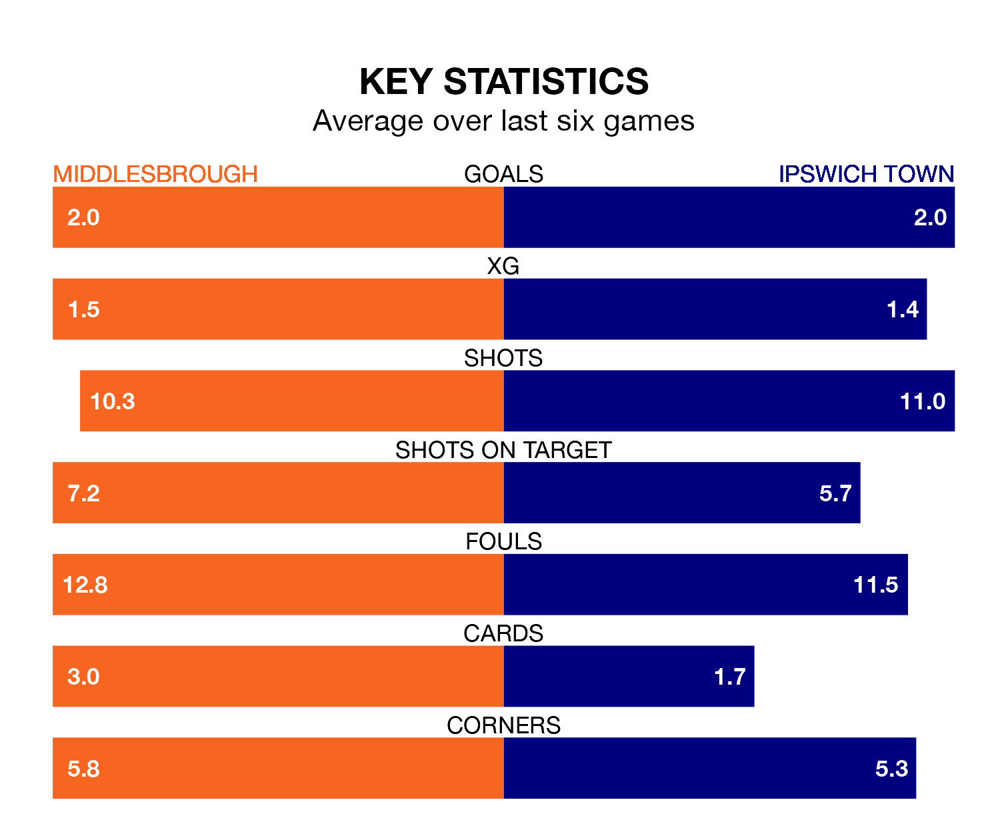

Middlesbrough host Ipswich Town on Saturday at the Riverside Stadium in the Championship.
In their last league match, on December 2, Middlesbrough lost to Leeds United 3-2 away, with their goal scored by Emmanuel Latte Lath (two).
Ipswich won, 2-1 at home against Coventry City, with George Hirst and Wes Burns on the scoresheet.
With 41 goals in 19 games so far this season, Ipswich are the league's highest scorers with 2.2 goals per game. And they are conceding fewer than average, letting in 25 goals at a rate of 1.3 per game.
Middlesbrough are also above average scorers, with 1.6 goals per game, compared to a league average of 1.4. They have conceded 1.5 goals per game.
Town are second in the table after 19 games, of which they have won 14 and drawn three, earning 45 points.
The Boro are 10 places behind the Blues in 12th, with eight wins and three draws putting them on 27 points.
In Václav Hladký, the away team can rely on one of the league's safest pair of hands. He has kept six clean sheets in his 19 appearances this season, and only one other 'keeper – West Bromwich Albion's Alex Palmer – has been able to prevent the opposition scoring on more occasions in the Championship.
In the hosts' net, Timothy Dieng has five clean sheets in 19 games. He has conceded a goal every 66 minutes, 20% more often than the 81 minutes between goals for Hladký.
In the last 10 years, Middlesbrough and Ipswich have played each other on nine occasions. Middlesbrough won six of them, Ipswich one, and they drew twice.
On average, the Boro scored 1.8 goals and the Blues 0.6 in those matches.
Their last meeting was on December 29 2018, when Middlesbrough won 2-0 at home.
Middlesbrough are in mixed form in the Championship, with two wins and a draw from their last six games.
With three wins and two draws over that period, Ipswich's form is better – they have taken 11 points from 18, compared to Middlesbrough's seven.
